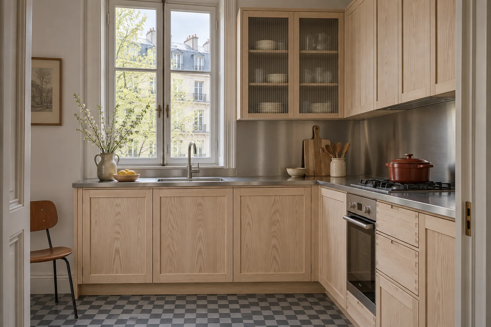

Кухня с островом
Тихий дом
Запасы убрали в высокий шкаф. Стену над мойкой оставили открытой, а на острове один человек может раскатывать тесто, пока другой режет овощи.
Взять «Тихий дом» за основу ↗
Коллекции
Для дома, где готовят вдвоём, и квартиры, в которой важен каждый метр. Возьмите одну за основу и примерьте к своей комнате.
Кухня с островом
Запасы убрали в высокий шкаф. Стену над мойкой оставили открытой, а на острове один человек может раскатывать тесто, пока другой режет овощи.
Взять «Тихий дом» за основу ↗
Угловая кухня
Мойка переехала к окну, плита заняла короткую стену. Стальная столешница связывает обе стороны угла. Часто используемая посуда стоит за рифлёным стеклом.
Взять «Городское утро» за основу ↗Материалы
Одна форма фасада меняется от породы и отделки. Выберите образец для своей кухни.
Кухонная мастерская
Добавьте шкафы и технику. Перетаскивайте их вдоль стены или на остров. Объёмный вид покажет результат в выбранном фасаде. Изменить размеры кухни